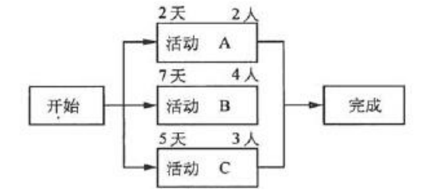
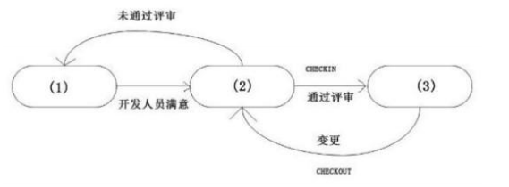

一. 单选题（共46题，96.6分）
1. (单选题)在项目的实施阶段,当客户明确提出某项需求需要更改时,项目经理应该()。
- A. 与客户方领导进行沟通,尽量劝说其不要更改需求
- B. 先评估变更会对项目带来怎样的影响,然后再与客户商量解决措施
- C. 接受客户的变更请求,启动变更控制流程,遵循变更流程进行更改
- D. 汇报给高层领导,由领导决定
2. (单选题)有关项目团队激励的叙述正确的是()
- A. 马斯洛需求理论共分为4个层次,即生社会、受尊重和自我实现
- B. X理论认为员工是积极的,在恰当的情况下员工会努力工作
- C. Y理论认为员工只要有可能就会逃避为公司付出努力去工作
- D. 海兹伯格理论认为激励因素有两种,一是保健卫生,二是激励需求
3. (单选题)在项目实施变更应以()为依据。
- A. 项目干系人的请求
- B. 项目管理团队的要求
- C. 批准的变更请求
- D. 公司制度
4. (单选题)项目每个阶段结束时的一个重要工作是进行项目绩效评审,评审的主要目标是()
- A. 决定项目是否能够进入下一个阶段
- B. 根据过去的绩效调整项目进度和成本基准
- C. 评定员工业绩和能力
- D. 得到客户对项目绩效认同
5. (单选题)
人力资源分配图是 ( )
- A.
展现目前的人力资源质量
- B.
展现项目中人力资源在各个阶段的分布情况
- C.
说明人员分工情况
- D.
说明项目需要的所有资源
6. (单选题)下面针对项目整体变更控制过程的叙述不正确的是()
- A. 配置管理的相关活动贯穿整体变更控制始终
- B. 整体变更控制过程主要体现在确定项目交付成果阶段
- C. 整体变更控制过程贯穿于项目的始终
- D. 整体变更控制的结果可能引起项目范围、项目管理计划、项目交付成果的调整
7. (单选题)某公司定期组织公司的新老员工进行聚会,按照马斯洛的需求层次理论,该行为满足的是员工的()。
- A. 生理需求
- B. 安全需求
- C. 社会需求
- D. 受尊重需求
8. (单选题)下列选项中,属于变更控制委员会主要任务的是()
- A. 提出变更申请
- B. 评估变更影响
- C. 评价、审批变更
- D. 实施变更
9. (单选题)
某软件企业为规范配置管理活动，确保项目配置管理的有效性，避免出现混乱现象，对配置管理库状况进行审计，确定配置库中的配置项和建立的基线的正确性、完整性，并且记录审计结果。该企业的配置审计内容包括（）。
（1）评估基线的完整性
（2）检查配置记录是否正确反映了配置项的配置情况
（3）审查配置项的结构完整性
（4）对配置项进行技术评审
（5）验证配置项的完备性和正确性
（6）验证是否符合配置管理标准和规程
（7）对审计后提出的各项行动进行跟踪，直到结束
- A.
（1）（2）（3）（4）（5）（6）
- B.
（1）（3）（5）（6）（7）
- C.
（2）（4）（5）（6）（7）
- D.
（1）（2）（3）（4）（7）
10. (单选题)项目经理为了有效管理项目需掌握的软件技能不包括()。
- A. 有效的沟通
- B. 激励
- C. 领导能力
- D. 后勤和供应链
11. (单选题)在实际沟通中,()更有利于被询问者表达自己的见解和情绪。
- A. 封闭式问题
- B. 开放式问题
- C. 探询式问题
- D. 假设性问题
12. (单选题)项目经理为有效管理信息系统集成项目,需要专门的技术和知识来保证,下列说法中正确的是()
- A. 项目经理要整合项目团队成员知识,使管理团队知识结构满足管理需求
- B. 项目经理没必要掌握项目管理各知识的细节,只需要掌握5个知识领域的纲要
- C. 项目经理所需要知识就是项目经理所掌握的知识
- D. 项目经理要求项目组成员都精通项目管理相关知识
13. (单选题)以下关于项目沟通原则的叙述中,()是不正确的。
- A. 面对面的会议是惟一有效地沟通和解决干系人之间问题的方法
- B. 非正式的沟通有利于关系的融洽
- C. 有效地沟通方式通常是采用对方能接受的沟通风格
- D. 有效利用沟通的升级原则
14. (单选题)在集成项目实施中,建设方要求建议项目配置管理。关于配置管理,以下叙述正确的是()。
- A. 配置管理适合软件开发过程,集成过程无法建立配置管理
- B. 配置管理必须要有配置工具,否则无法建立
- C. 如果没有专用工具,用手工方式也可以进行配置管理
- D. 配置库中把各设施登记清楚就可以
15. (单选题)把产品技能和知识带到项目团队的恰当方式是()
- A. 让项目经理去学校学习三年,获得一个项目管理硕士学位,这样就能保证他学到项目管理的所有知识
- B. 找一个项目团队,其成员具备的知识与技能能够满足项目的需要
- C. 让项目团队在项目的实际工作中学习
- D. 找到可以获得必要的技能和知识的来源
16. (单选题)关于项目经理的角色,下列描述中正确的是()
- A. 项目经理应该是团队中技术最强的人
- B. 项目经理应该有项目发起人担任
- C. 项目经理应该具有项目管理的经历和经验
- D. 项目经理就是项目的总工程师
17. (单选题)
组建团队是指获得人力资源的过程，项目管理团队应确保所选择的人力资源可以达到项目的要求。在此要求下，组建项目团队需要的输入应包括（）。
（1）角色和责任（2）资源日历（3）项目的组织结构图（4）环境和组织因素（5）项目人员分配
- A.
（1）（2）（3）
- B.
（1）（3）（4）
- C.
（2）（3）（5）
- D.
（3）（4）（5）
18. (单选题)
大量使用( )沟通最有可能协助解决复杂的问题
- A.
口头
- B.
书面
- C.
正式
- D.
信息管理系统
19. (单选题)变更管理首要完成的任务是()
- A. 分析变更的必要性和合理性,确认是否实施变更
- B. 记录变更信息,填写变更控制单
- C. 做出变更,并交上级审批
- D. 修改相应的软件配置项(基线),确立新的版本
20. (单选题)资源分析人员在对某项目进行活动资源估算分析时,发现的主要问题是:该项目依赖张工的经验和个人能力,但同时张工还在其他项目中担任重要角色。为了保证项目资源的使用不发生冲突,资源分析人员在进行资源估算时应提交()。
- A. 专家评审意见
- B. 活动属性
- C. 资源类比估算清单
- D. 活动资源日历
21. (单选题)
下面各项对沟通计划的描述,哪项是错误的( )
- A.
确定沟通需求
- B.
确定沟通的内容
- C.
确定沟通方法
- D.
对项目管理是没有必要的
22. (单选题)A公司承担了某企业ERP项目的实施工作。项目经理入场后首先制定了项目沟通联络机制,并建议项目参建单位都提供各自的联络人,便于后续有效的沟通。对此做法,最准确的描述是()。
- A. 沟通联络机制相当于一份沟通计划
- B. 沟通联络机制应满足所有项目干系人的沟通需求
- C. 沟通联络机制应明确沟通的内容和时间表
- D. 沟通联络机制应经常调整以保证持续的适用性
23. (单选题)关于典型的大型、复杂信息系统项目,下列说法中,()是不正确的。
- A. 项目团队构成复杂,不仅包括项目内部人员体系,也包括合作方人员体系
- B. 项目规模较大,目标构成复杂,往往分解成目标相互关联的小项目
- C. “项目”沟通成本大幅度上升,项目经理应直接管理各子“项目”内的沟通
- D. 项目管理方法与小型项目相比发生了根本的改变
24. (单选题)
下列哪个不是项目管理计划的一部分?
- A.
里程碑图示
- B.
进度
- C.
数据库设计
- D.
风险清单
25. (单选题)
项目经理在一个高科技公司,现在正在为一个新的项目选择合适的组织结构,这个项目涉及很多的领域和特性,他应该选择哪种组织结构( )
- A.
矩阵型
- B.
项目型
- C.
职能型
- D.
组织型
26. (单选题)某信息系统项目在项目预测与评估的过程描述如下:(1)聘请多领域专家采取背对背的方式进行;(2)借助问卷获取专家的评估结论;(3)汇总问卷结果并在专家间传阅;(4)专家调整各自评估结论;(5)通过多轮征询获得专家对项目评估的一致见解。那么该项目的评估采用的方法是()
- A. 相关关系法
- B. 头脑风暴法
- C. 德尔菲法
- D. SWOT法
27. (单选题)根据《软件工程术语GB/T11457-2006》,基线是业已经过正式审核与同意,可用作下一步开发的基础,并且只有通过正式的修改管理步骤方能加以修改的规格说明或产品,对于配置管理,有以下三种基线:功能基线、()和产品基线。
- A. 编码基线
- B. 测试基准
- C. 里程碑
- D. 分配基线
28. (单选题)以下关于范围变更的说法错误的是()
- A. 范围变更是不可避免的,范围变更如果不加以控制可能引起范围蔓延
- B. 客户对产品的需求发生变化其实就是一种范围变更
- C. 范围变更过程中应多让客户参与,以免后期进行范围确认时发生问题
- D. 范围变更控制流程与整体变更控制流程应分开涉及,确保项目发生范围变更时遵从范围变更控制流程,由于范围变更引起了其他变更时遵从整体变更流程
29. (单选题)项目经理应对项目干系人进行管理,下列关于干系人管理的说法中,()是不正确的。
- A. 项目经理进行干系人管理的重点是保证客户和高层领导的满意
- B. 项目经理应让不同的干系人得到他们需要的信息,并平衡干系人的利益
- C. 项目管理应保持与高层领导的沟通,以争取领导的支持
- D. 为了保持与项目团队良好的沟通,项目经理应让团队成员参与项目的计划、决策等工作
30. (单选题)根据以下某项目的网络图,在最佳的人力资源利用情况下,限定在最短时间内完成项目,则项目的人力资源要求至少为()人。

31. (单选题)人力资源计划编制的输出不包括()。
- A. 角色和职责
- B. 人力资源模板
- C. 项目的组织结构图
- D. 人员配备管理计划
32. (单选题)小王作为项目经理正在带领项目团队实施一个新的信息系统集成项目。项目团队已经共同工作了相当一段时间,正处于项目团队建设的发挥阶段,此时一个新成员加入了该团队,此时()。
- A. 团队建设将从震荡阶段重新开始
- B. 团队将继续处于发挥阶段
- C. 团队建设将从震荡阶段重新开始,但很快就进入发挥阶段
- D. 团队建设将从形成阶段重新开始
33. (单选题)
在哪种组织结构中,项目成员没有安全感( )
- A.
职能型
- B.
矩阵型
- C.
项目型
- D.
弱矩阵型
34. (单选题)根据《计算机软件保护条例》,对软件的保护包括()。
- A. 计算机程序,但不包括用户手册等文档
- B. 计算机程序及其设计方法
- C. 计算机程序及其文档,但不包括开发该软件所用的思想
- D. 计算机源程序,但不包括目标程序
35. (单选题)在某企业承建了一个信息系统集成项目中,建设方注重交付时间和质量,承建方公司老总注重项目利润,质量监控部经理注重项目的质量,人力资源部经理注重项目人力使用效率。下面围绕项目干系人管理的叙述错误的是()
- A. 各项目干系人的目标可能是相互矛盾的
- B. 在项目不同阶段,干系人的要求有不同的优先级别
- C. 重点考虑客户要求,人力资源部经理意见可忽略
- D. 当质量、进度、成本目标发生矛盾时,项目经理要进行平衡
36. (单选题)绩效评估实施过程的首要任务是()
- A. 确定绩效评估项
- B. 组织评估队伍
- C. 收集审核被评价项目数据资料,进行定量评价,并参与定性评价
- D. 归纳、分析、撰写评价报告
37. (单选题)()不能作为编制人力资源计划的工具。
- A. 层次结构
- B. 责任分配矩阵
- C. 文本格式的角色描述
- D. 团队成员的通讯录
38. (单选题)以下关于项目干系人的描述中,不恰当的是()
- A. 项目干系人的目标往往彼此相距甚远,甚至是相冲突
- B. 项目管理团队忽略消极项目干系人的利益,可以使项目尽快得到成功
- C. 项目干系人在项目生命周期的不同阶段会发生变化
- D. 项目干系人对项目的影响可能是积极地也可能是消极的
39. (单选题)冲突管理中最有效的解决冲突方法是()
- A. 问题解决
- B. 求同存异
- C. 强迫
- D. 撤退
40. (单选题)以下关于变更控制委员会(CCB)的描述错误的是()。
- A. CCB也称为配置控制委员会,是配置项变更的监管组织
- B. CCB任务是对建议的配置项变更作出评价、审批以及监督已批准变更的实施
- C. CCB组织可以只有一个人
- D. 对于所有项目,CCB包括的人员一定要面面俱到,应覆盖变更涉及的所有团体,才能保证其管理的有效性
41. (单选题)项目整体变更管理过程涉及到负责批准或拒绝变更请求的变更控制委员会,下列关于变更控制委员会的描述中,错误的是()
- A. 在一些大的复杂的项目中,可能会有多个变更控制委员会,他们负责不同的职责
- B. 变更控制委员会的角色和职责应在变更和配置控制过程中予以明确定义
- C. 变更控制委员会的角色和职责应取得所有关键项目干系人的认可
- D. 变更控制委员会更新项目计划、任务清单和时间表,以反映变更对已做或在做工作的影响
42. (单选题)配置管理中有一项工作是变更控制,其中配置项状态的过程如图所示:

在这个状态变化过程中,图中(1)、(2)、(3)三个状态依次为()。
- A. 工作状态、受控状态、评审状态
- B. 评审状态、工作状态、受控状态
- C. 工作状态、评审状态、受控状态
- D. 受控状态、评审状态、工作状态
43. (单选题)项目进行过程中,客户要求进度提前,围绕整体变更管理,项目经理以下做法,正确的是()
- A. 进度变更和整体变更应一步到位,不要反复迭代
- B. 进度变更对成本、人力资源的影响,可在变更实施时再进行评价
- C. 先要求提出变更申请,走进度变更流程,然后根据变更后的新基线再进行相关的成本、人力资源等的变更
- D. 只要变更内容正确,即可执行变更
44. (单选题)项目沟通中不恰当的做法是()
- A. 对外一致,一个团队要用一种声音说话
- B. 采用多样的沟通风格
- C. 始终采用正式的沟通方式
- D. 会议前将会议资料发给所有参会人员
45. (单选题)一份完整的项目绩效报告应该包括的内容有:项目的进展和执行情况、成本的使用情况、团队成员的绩效情况、()。
- A. 变更后的项目计划、项目存在的问题及解决措施
- B. 变更后的项目计划、对项目的预测
- C. 干系人沟通需求、需求变更
- D. 项目存在的问题及解决措施、对项目的预测
46. (单选题)小王是某软件开发公司负责某项目的项目经理,该项目已经完成了前期的工作进入实现阶段,但用户提出要增加一项新的功能,小王应该()
- A. 立即实现该变更
- B. 拒绝该变更
- C. 通过变更控制过程管理该变更
- D. 邀请客户与公司领导协商

.png)